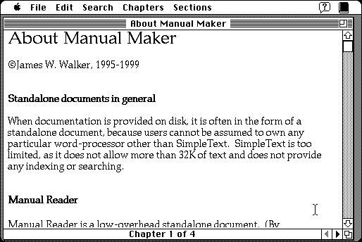

Download
Manual_Maker_final.zip (29K) Manual Maker 2.4 repackaged into a zipped hfs disk image and checksum file. The disk image can be mounted with Mini vMac.
Manual_Maker_final.sit (37K) Manual Maker 2.4 in the original format.
copyright: James W. Walker
mod date: Apr 20, 1999
license: freeware, former shareware
official url :
James Walker's Mac Stuff
Standalone document maker. For “System 7 through Mac OS 9&rdqup;

If you find these downloads useful, please consider helping the Gryphel Project, which hosts them.
Here are the md5 checksums for the downloads, signed with Gryphel Key 5:
--------- GRY SIGNED TEXT --------- 28e98f24a316f0dac34a78a4ed5b3fae Manual_Maker_final.zip 6662b522a2a896f148f40ac057906006 Manual_Maker_final.sit ------- BEGIN GRY SIGNATURE ------- Gry/4Xa8CFcUzxdN/PET/6No+9gA0MQAmCVfwqILCwZtNYacSahHfmycG6nuBNdM 1SWM2UjSA+nzruDiTpj/5Sf12n3AZy7Xw4fCcDw7dREhWlRv92vU5hNaNGwD3vXC yFpqAcjssy1if3nio9dJNf0kPBHkPcW8VkL9hFzacXWfjlwwAl5zxWrTpN1Si1I3 -------- END GRY SIGNATURE --------